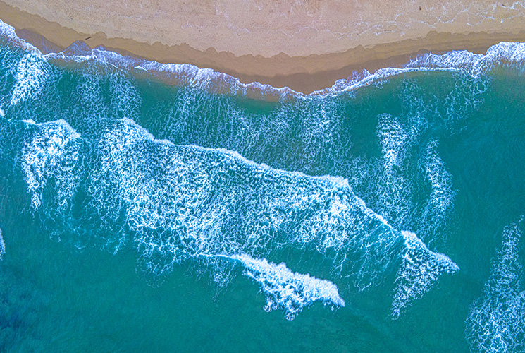
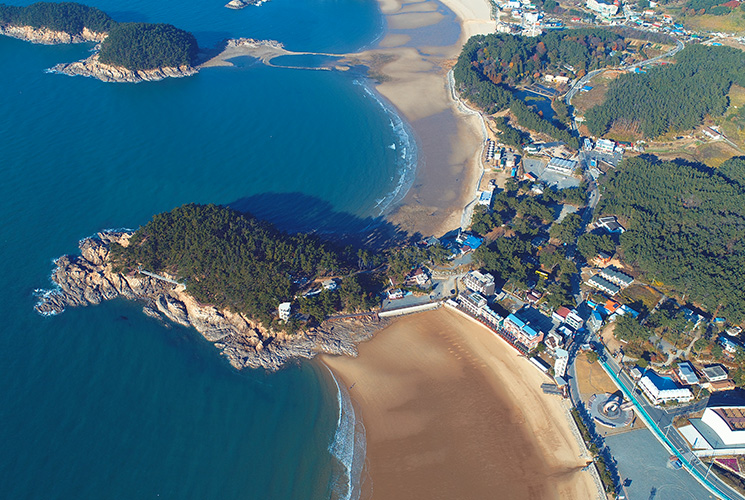
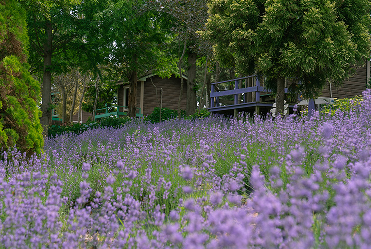
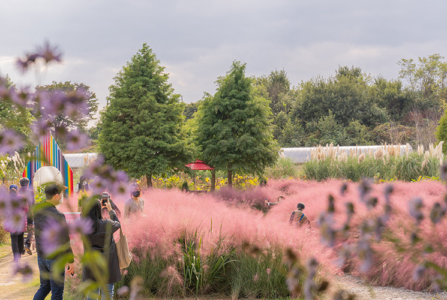

여행안내
한 번도 경험해 본 적 없는 새로운 시간과 공간
-
갈 음 이 해 수 욕 장펜션에서 차량으로 5분거리
갈음이 해수욕장백사장 길이 800m, 폭 250m로 태안 읍내에서
서쪽으로 약 20㎞ 떨어진 서해 바닷가에 위치하고 있습니다.
해변의 모래가 매우 곱고 바닷물이 깨끗하며 천연의 사구가 발달되어 있고,
또한 울창한 소나무가 숲을 이루고 있어 가족 단위의 피서객이 야영하기에 적합합니다. -
 안 흥 항펜션에서 차량으로 5분거리
안 흥 항펜션에서 차량으로 5분거리어촌정주생활의 중심지역할을 수행하는 다기능 어항을 개발하여
어선·여객선의 안전정박과 원활한 어획물양육 등
어민소득증대를 위하여 어항이 개발되었습니다.
정죽리 새우양식장 방조제 남측 기부에서 마도 북측 표고 71m 산정과
마도 남측 돌단 산정을 연결 이곳에서 정남으로 700m 해상점과 죽도를 연결
죽도에서 정동으로 600m 해상점을 각각 연결하는 선을 따라 형성되었습니다. -
만 리 포 해 변펜션에서 차량으로 5분거리
해변이 넓고 완만한 것이 장점이며 뒤에는 소나무 숲이 울창하고 식수도 풍부합니다.
특히 낙조가 일품이며, 7,000여 종의 각종 식물이 전시되어 있는 식물원이 있습니다.
만리포해수욕장은 태안군을 가로지르는 32번 국도의 가장 끝부분에 있으며,
태안해안국립공원으로 지정되어 있습니다. 슬로시티 태안의 대표적인 관광지로,
특히 경관이 아름답기로 유명합니다. 활처럼 휘어진 모래사장은 1km 가까이 이어지며
수심이 완만하고 백사장이 넓어 해수욕을 즐기기에 안성맞춤입니다. -
팜 카 밀 레 허 브 농 원펜션에서 차량으로 5분거리
"팜 카밀레"는 샵과 온실 위주의 기존의 허브농장과는 차별화된 전략,
즉 허브농원이 추구하고자 하는 관상적 가치뿐만 아니라, 원회적 가치, 생활적 가치를
방문하시는 고객 모두에게 전달하고자 합니다.
캐모마일가든, 로즈가든, 칼라가든, 보태니컬가든, 와일드가든, 라벤다가든, 토피어리가든의
7개의 테마 가든과 이곳 팜카밀레에서만 맛볼수 있는 허브빵과 허브로 만든 식사로
여러분을 맞이하여 허브의 향기를 눈으로, 입으로, 코로 담아갈 수 있도록 하였습니다. -
청 산 수 목 원펜션에서 차량으로 5분거리
청산수목원은 연꽃과 수련, 창포 등 200여 종의 습지식물이 어우러진 수생식물원입니다.
밀레·고흐·모네 등 예술가들의 작품 속 배경과 인물을 만날 수 있는 테마정원,
계절 따라 다양한 모습을 연출하는 산책로와 황금메타세쿼이아 등 600여 종의 나무들이
둥지를 틀고 있는 수목원으로 꾸며져 있습니다.